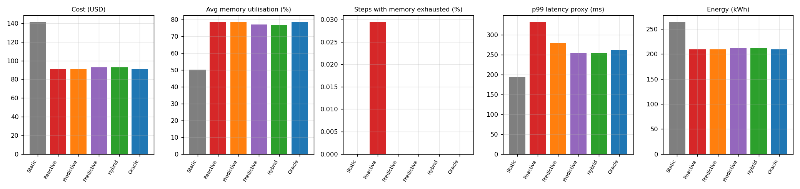

ML-Based Memory Prediction and Intelligent Cloud Resource Allocation
ACC lab CA · Piyush Chaudhary (16010123234) · Aswin Nambiar (16010123086) · K.J. Somaiya College of Engineering
A resource manager that forecasts a service's memory demand 15 minutes ahead and sizes a VM pool for the forecast. It is compared with static peak provisioning and reactive target tracking on accuracy, utilisation, latency, cost and energy, and stress-tested for the question: what happens when the prediction is wrong?
Scope. The workload is synthetic and the cluster is a simulator with assumed cost and power figures. Absolute numbers show relative differences between policies, not measurements from a live cloud account.
Headline results
1.01 %MAPE, MLP forecaster (15 min horizon)
49 %lower error than "no change" baseline
50 → 78 %average utilisation vs static
−36 % / −21 %simulated cost / energy vs static
Policy comparison (test period)
| Policy | Util. | Mem. exhausted | p99 latency | Cost | Energy |
|---|---|---|---|---|---|
| Static (peak-sized) | 50.3 % | 0 % | 194 ms | $141.36 | 264.0 kWh |
| Reactive | 78.6 % | 0.03 % | 333 ms | $90.95 | 209.5 kWh |
| Predictive (mean) | 78.5 % | 0 % | 279 ms | $90.95 | 209.5 kWh |
| Hybrid (q95 + safety nets) | 77.0 % | 0 % | 254 ms | $92.72 | 211.4 kWh |
| Oracle | 78.5 % | 0 % | 263 ms | $90.98 | 209.5 kWh |
When the prediction is wrong
- Under-prediction is dangerous: a 20 % low forecast leaves memory exhausted in 28.9 % of steps.
- Over-prediction only costs money: +40 % forecast raises cost by 37 % with no violations.
- Sudden surges: the instance launch delay, not the forecaster, is the binding constraint.
- Drift fallback in the hybrid policy removes the bias failure, at a cost premium.


